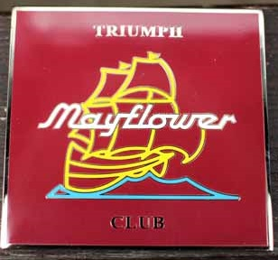
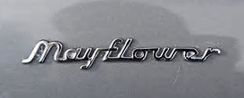
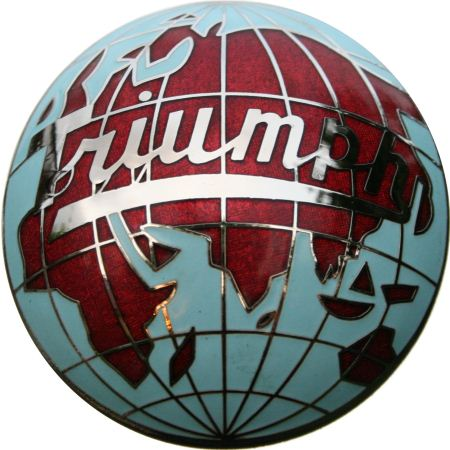

History of the Triumph Mayflower Club and Flower Power Magazine
The club
The ‘Triumph Mayflower Club’ (TMC) was formed in 1974 and exists to keep these wonderful and unique vehicles on the road (thus contributing, albeit in a small way, to the motoring heritage of the future). The club’s aims were, and still are, to encourage ownership of the Triumph Mayflower; promoting the vehicle to a wider audience and pooling the extensive knowledge of the members. Spares suppliers are also identified. Above all else, the members assist each other to look after and improve their cars, to preserve them for the future.
The Triumph Mayflower became a rare sight on British roads after the 1960s, and in 1974 (21 years after the last Mayflower rolled-off the production line), a number of owners in Bristol, UK, formed the TMC: Derek Goodyear; Phil Hall; TC Mills (2) and Reg Varney aka ‘Keith’ (3). They were members 0 1 2 3. Number 4, also from Bristol, joined on 19th May 1979. Some of the early meetings were held at the Bell Inn, St Georges in Bristol. Shortly after this, owners from all over the UK were joining and, as the membership grew, the club activists met in other parts of the country, often at the homes of committee members. As knowledge of the club’s existence spread, applications were received from the USA, Canada, Australia, New Zealand, Japan and many mainland European countries. The efforts of these early ‘pioneers’ continue to bear fruit as each year more restored Mayflowers take to the roads all over the world. The TMC’s constitution, drafted by Peter Burge (20), was adopted 1978/9 and this continues to regulate its activities.
The club is open to all: owners, enthusiasts and any other interested persons from all over the world. It is a member of the ‘Federation of British Historic Vehicle Clubs’ and is affiliated to other Standard and Triumph clubs. For many years, members – with or without their Mayflowers – have met at rallies and other events. The TMC has held its own annual rally as well as working in conjunction with other Triumph clubs. A magazine, named ‘Flower Power’, is produced by the club and distributed to all subscribing members. Within this, there are articles contributed largely by members relating to historical information, owners’ experiences, repairs and spares information, etc. A link to all the ‘Flower Power’ magazines available so far on the website is given here: Flower Power archive.
Stocks of parts are held by the TMC and are available to members only, at reasonable prices, as the TMC is non-profit-making. Some original parts have been located by members and these complement the second-hand and re-manufactured parts held for sale. Recently, the endeavours of some of the members from the USA have resulted in the re-manufacture of a variety of rubbers parts, including quarterlight seals, bonnet/cowl seals and lower door seals. It is an expensive and time-consuming business trying to locate spares, and the TMC’s members play their part admirably.
Because of the widely-dispersed membership, it is not possible to organise local meetings on a regular basis. Indeed, planning meetings that are accessible to all members worldwide is of course unrealistic. However, most members do live within the UK. Meetings are held in both southern and northern UK locations, and there is also a centrally-held Annual General Meeting. The AGM takes place at the end of March and is open to all members; promoting member participation at all levels of the club. Any member can stand on the committee or express a view on the club’s activities. Historical lists of committee members can be found here: Honours Boards.
Flower Power
Flower Power has been the primary means of members communicating with other members across the world since the club was formed in 1974. Indeed, before the inception of the ‘world wide web’ it was the only means of communication for large amounts of information.
As this piece is written, around 160 Flower Power magazines have been produced with a number of editors over the years (see honours boards) and of course countless contributors.
The earliest Flower Power magazines were in A4 format, but later changed to A5 – easier to manage from a distribution and editorial point of view. It is the intention that all past editions of Flower Power will be archived on this site (Flower Power Archive); currently, nearly twenty of those published have been included, with more to follow as time permits.
Also of interest, technical articles published by members over the years are listed, with links to the relevant Flower Power and page references to allow easy access when information is required (Technical Articles List).
Sources
This article is an amalgamation of information from various sources including:
- Triumph Mayflower section of the club historian’s website
- The club directory entry on Car and Classic
- The old TMC website
- Interviews with / contributions from long-standing members John Oaker (715) and Peter Burdge (20)